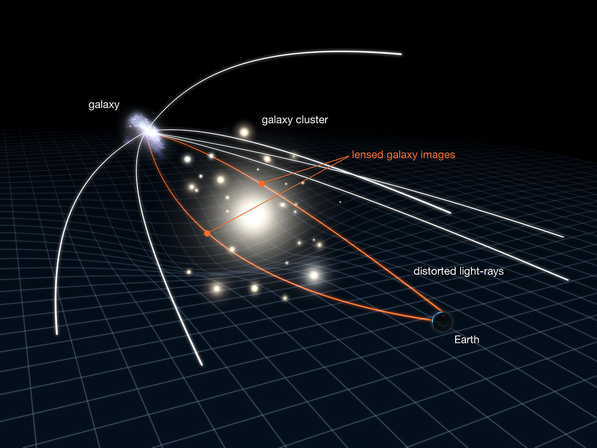
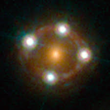
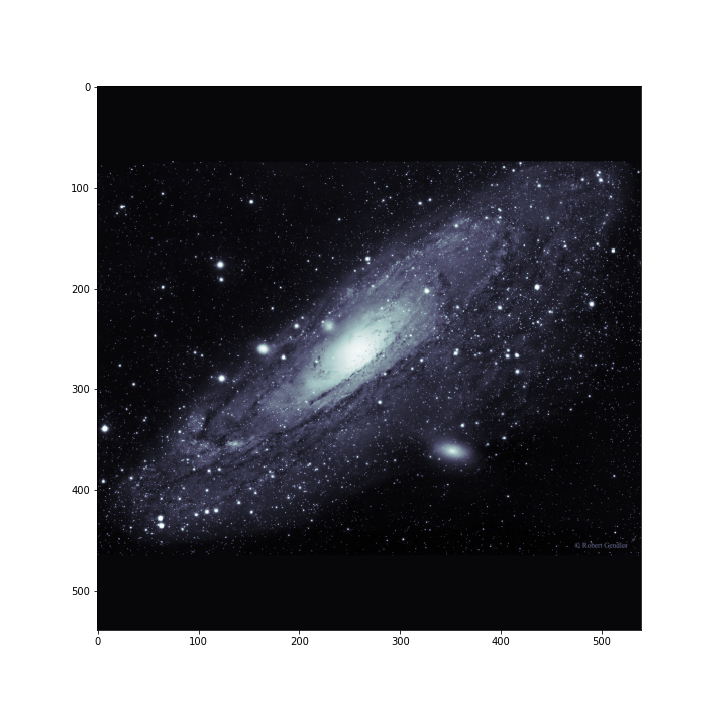
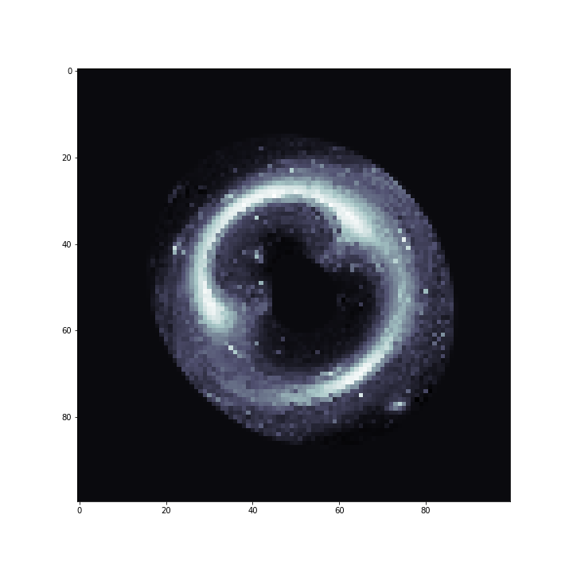

Hi!
I am a 5th year PhD candidate in the Department of Physics and Astronomy at UCLA. My research centers on the use of strong gravitational lensing by galaxies as a probe of the nature and origins of dark matter.
Gravitational lensing refers to the deflection of light rays by gravitational fields. It is perhaps the most spectacular and in-your-face example of a phenomena that is totally removed from our everyday experience. For some explanation about why it is useful, and to see a couple animations, click the "Lensing Animations" link below.
Strong Gravitational Lensing (currently under construction....)
What is it?
Imagine looking through a wine glass at the room you're currently in. The wine glass will deflect incoming light rays, producing a warped and distorted view of your surroundings. Gravity can also deflect the path of light, and very massive objects like galaxies can act like a giant cosmic wine glasses, producing distorted images of luminous objects in the background. This effect is called strong gravitational lensing.
The schematic below illustrates what is going on in strong lensing: deflected light rays reach our telescopes from multiple positions on the sky. The other image is of the strong lens system HE0435-1223. The lensing galaxy in the center produces four images of a background quasar.
-


-


Image Magnifications in Quadruply Imaged Quasars
When the background object is very bright but more compact than a galaxy, rather than observing a lensed arc you might see two or four duplicate images of it. The strong lens pictured above, HE0435, is an example of a quadruple image system. The magnifications of these images are extremely sensitive to the presence of very small blobs of dark matter.
To illustrate, in the animation below you'll see me drag a blob of dark matter (similar to the one I dragged across the arc of lensed-Andromeda) across one of the multiple images of a quadruply imaged background object. In the left panel, you'll see how bright the image gets as the blob transits.